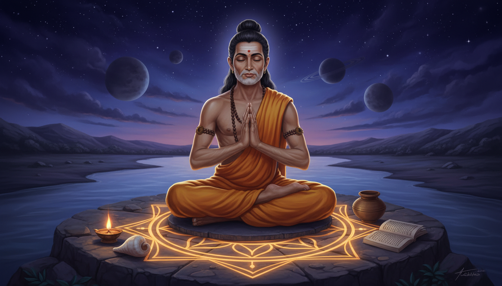

1. वह बालक जिसने वेदों का पाठ सही किया
महाभारत के वन पर्व में पांडव राजा और द्रौपदि अपने बारह वर्षीय निर्वासन के पहले वर्ष वन में चलते हुए ऋषि लोमश से मिलते हैं, जो तीन अध्यायों में अष्टावक्र की कथा सुनाते हैं। यह कथा एक टूटे हुए बालक की है, जो राजा के यज्ञ-सभा में अपनी वाणी से प्रवेश करता है, और अंत में एक नदी उस बालक को ठीक कर देती है। पर मूल रूप से यह जीने का एक मार्गदर्शिका भी है।

सफेद बाल बुद्धिमत्ता नहीं बनाते,
न वर्षों से, न सफेद केशों से, न धन से, न ही बंधुओं से ऋषियों ने धर्म बनाया,
हमारे लिए महान वही है जो सीखा है।
— अष्टावक्र, वन पर्व, महाभारत, तृतीय पर्व
अष्टावक्र के नाम में उसका पूरा कारण दर्ज है। अष्टावक्र का शाब्दिक अर्थ है आठ विकृतियां: अष्ट, आठ; वक्र, टेढ़ा। बालक का यह नाम किसी सम्मान या उपनाम नहीं था। यह नाम उस पर किए गए किसी कृत्य का रसीद है। कथा के अनुसार इनके मातृ-पिता ऋषि अरुणि के आश्रम में वेद का अध्ययन करते थे; पिता कहोदा थे और माता सुजाता, जो अरुणि की पुत्री थीं।
कारण असामान्य रूप से स्पष्ट है, और कथा सबसे पहले यही देखने को कहती है। कहोदा वेदों का पाठ कर रहे थे और उच्चारण में चूक हुई। सुजाता के गर्भ में पल रहा शिशु बोला और उन्हें सही किया। पिता अपने ही अजन्म बेटे की ओर से सुधार सहन न कर सके, तो शिशु को टेढ़ा पैदा होने का श्राप दिया। आठ विकृतियां हुईं, और नाम भी उन्हीं के अनुसार पड़ा। यह कथा आख़िर जो कर रही है वह यह है कि जब कोई व्यक्ति ठीक होने पर रहता नहीं, तो उस कीमत का भुगतान उस व्यक्ति से होता है जिसे इसमें कोई विकल्प नहीं।
2. वह बालक जो राजा के यज्ञ में पहुँच गया
गरीब परिवार के लिए धन चाहिए, इसलिए कहोदा वीधेह के राजा जनक के पास गए और वंदिन से बहस में हार गए, जिसके परिणामस्वरूप उन्हें जल में डुबो दिया गया। सुजाता ने अपने पति की यह दुर्गति अपने पुत्र से छिपाई। अष्टावक्र बड़ा होकर अपने श्राप और पिता की दुर्गति से जान पाया, तो उसने अपनी माता को साथ लेकर राजा जनक के महान यज्ञ का साक्षी बनने के लिए चल पड़ा। द्वार पर उसे रोक लिया गया, क्योंकि भीतर केवल विद्वान ब्राह्मण और राजा जाने का अधिकार था, और वह केवल दस वर्ष का था। उसकी वाणी ने राजा को प्रभावित किया और राजा ने उसे प्रवेश की अनुमति दी।
फिर वंदिन से बहस हुई और अष्टावक्र उसमें विजयी हुआ। उसने राजा से कहा कि वंदिन पर वही दंड हो जो उसने ब्राह्मणों पर किया था। तब वंदिन ने प्रकट किया कि वह वरुण का पुत्र है, और बताया कि उसने उन ब्राह्मणों को उसी कर्म के लिए डुबोया था जो उसके पिता बारह वर्ष तक कर रहे थे और जिसके लिए बहुत से ब्राह्मण चाहिए थे। उस समय तक कर्म पूरा हो चुका था, और उसने जिन ब्राह्मणों को डुबोया था, कहोदा सहित, सब मुक्त हो गए। घर लौटते समय कहोदा ने अपने पुत्र से समंगा नदी में स्नान करने को कहा, और जब अष्टावक्र नदी से बाहर आया तो उसकी सभी विकृतियां चली गईं।
ध्यान दीजिए कि नदी करती क्या है और क्या नहीं। वह बालक को कुछ पुरस्कार नहीं देती। वह केवल उसे हटा देती है जो उसके साथ किया गया था, और वह तब जब आख़िरकार जो चीज सचमुच ग़लत थी, वह सुधार ली गई। क्रम महत्त्वपूर्ण है: डूबे ब्राह्मणों को मुक्त करना पहले हुआ, नदी में स्नान बाद में। अष्टावक्र का सीधा होना बहस में जीत का पुरस्कार नहीं है; यह उन क्षतियों की मरम्मत है जो कभी उसकी ग़लती से नहीं हुईं।
संख्याओं की परीक्षा
पुराणों के वृत्तांत में यह दृश्य और भी तीक्ष्ण है। अष्टावक्र और श्वेतकेतु जनक के महल की ओर बढ़ते हैं और द्वारपाल युवा बालक को बाहर रोकने की कोशिश करता है। अष्टावक्र उसे समझाता है कि वह शास्त्रों में पंक्तिबद्ध है अतः वह वृद्ध है, और प्रवेश पाता है। जनक उसे कठोर प्रश्नों से परखता है जिनका उत्तर अष्टावक्र सरलता से दे देता है, फिर वंदिन के सामने खड़ा करता है। दोनों क्रम से संख्याओं एक से बारह पर छह तुरन्त रचित छंद बनाते हैं। जब वे संख्या तेरह पर पहुँचते हैं, तो वंदिन छंद का केवल आधा भाग बना पाता है और अष्टावक्र दूसरा भाग जोड़कर बहस जीतता है। पूरी प्रतियोगिता एक से तेरह तक की संख्याओं पर बने गूढ़ अर्थों और संकेतों से लड़ी गई है।
यही अंतिम दृश्य परंपरा हमारे सौंपती है: एक दस वर्ष का बालक, एक से तेरह तक की संख्याओं पर एक पेशेवर वक्ता को हराता है। उस काल में यह कथा जो कर रही थी, वह चाहे जो हो, यह प्रस्ताव भारत में कभी भी अप्रचलित नहीं हुआ, और अष्टावक्र गीता इसे बिना लज्जा के कहती है।
3. अष्टावक्र गीता: केवल एक सत्य पर बीस अध्याय
अष्टावक्र को अष्टावक्र गीता का, जिसे अष्टावक्र संहिता भी कहा जाता है, लेखक माना जाता है। यह एक शास्त्रीय वेदांत ग्रंथ है, जो ऋषि और मिथिला के राजा जनक के बीच हुए संवाद के रूप में प्रस्तुत है। इसका विषय है अस्तित्व की तात्विक प्रकृति और व्यक्तिगत मुक्ति का अर्थ। इसका सिद्धांत यह है कि केवल एक परम सत्य है, ब्रह्म; कि समस्त ब्रह्मांड एक है और उसी सत्य का प्रकटीकरण है; कि सब कुछ परस्पर सम्बद्ध है; और कि सभी आत्माएं उसी एक का अंश हैं। पाठ ज़ोर देता है कि व्यक्तिगत मुक्ति अंतिम लक्ष्य नहीं, अपूर्व आरंभ है।
गीता बाहरी जगत की पूर्ण अवास्तविकता और अस्तित्व की पूर्ण एकत्व पर भी ज़ोर देती है। टीकाकारों का कहना है कि इसमें न नैतिकता का वर्णन है, न कर्तव्यों का; यह नाम और रूप को अज्ञान के संकेत मानकर खारिज कर देती है। इसीलिए उस परंपरा में, जहाँ उपदेश की इतनी गाँठ है, यह ग्रंथ असामान्य लगता है; और इसीलिए इसे छिपने की एक शिक्षा भी समझा जाता है। अष्टावक्र गीता दुनिया से बाहर निकलने का रास्ता नहीं देती। यह दुनिया में रहते हुए, पर उससे बने बिना रहने का तरीका देती है।
यदि तुम मुक्त होने का विचार करते हो, तो मुक्त हो।
यदि तुम बंधा होने का विचार करते हो, तो बंधा हो।
आत्मा का ध्यान करो।
एक, अद्वय, उन्नत चेतना।
— अष्टावक्र गीता 1.4–14, अनुवादक थॉमस बायरोम
ग्रंथ की संरचना
अष्टावक्र गीता में बीस अध्याय हैं, और इनके शीर्षक अकेले ही पूरी दलील का नक्शा खींचते हैं। यह आत्मा को सर्वव्यापी साक्षी के रूप में खोलती है, फिर प्रकृति से परे सर्वात्मा की विस्मय बनाती है, फिर सब में आत्मा और आत्मा में सब की एकता, जानने वाला और न जानने वाला, विनाश की अवस्थाएं, आत्मा का शांत और अनंत सागर, मुक्ति, वैराग्य, आत्मा की शुद्ध प्रज्ञा, और मन का स्वाभाविक विनाश। अंत में अजन्म आत्मा जो ब्रह्म है, जगत के विनाश से स्वाभिवस्थान, पूर्ण एकत्व, और वह अवस्था जिसमें जीवित रहते हुए ही व्यक्ति को मोक्ष मिल जाता है।
| अध्याय | शीर्षक | अर्थ |
|---|---|---|
| I | Saksi | आत्मा सर्वव्यापी साक्षी के रूप में |
| II | Ascaryam | प्रकृति से परे अनंत आत्मा की विस्मय |
| III | Atmadvaita | सब में आत्मा और आत्मा में सब |
| IV | Sarvamatma | आत्मा का जानने वाला और न जानने वाला |
| V | Laya | चेतना के विनाश की अवस्थाएं |
| VI | Prakrteh Parah | चेतना के विनाश का अप्रासंगिक होना |
| VII | Santa | आत्मा का शांत और अनंत सागर |
| VIII | Moksa | स्वयं अपने बंधनों से सर्वदा मुक्ति |
| IX | Nirveda | उदासीनता |
| X | Vairagya | वैराग्य |
| XI | Cittrupa | आत्मा शुद्ध और प्रकाशमान बुद्धि के रूप में |
| XII | Svabhava | चिंतन के उदय का स्वाभाविक क्रम |
| XIII | Yathasukham | परम सुख |
| XIV | Isvara | मन का स्वाभाविक विनाश |
| XV | Tattvam | अजन्म आत्मा अर्थात ब्रह्म |
| XVI | Svasthya | जगत के विनाश से स्वाभिवस्थान |
| XVII | Kaivalya | आत्मा का पूर्ण एकल्व |
| XVIII | Jivanmukti | जीते हुए ही मोक्ष प्राप्ति की अवस्था |
| XIX | Svamahima | आत्मा की महिमा |
| XX | Akincanabhava | आत्मा की परम अतितितीयता |
ग्रंथ कितना पुराना है?
कोई नहीं जानता, और यह मतभेद शिक्षाप्रद है। राधाकमल मुखर्जी ने ग्रंथ को भगवद्गीता के तुरंत बाद की अवधि, लगभग 500–400 ईसा पूर्व, का माना। एडिनबर्ग विश्वविद्यालय के संस्कृत के प्रोफेसर एमेरिटस जे. एल. ब्रॉकिंगटन इसे कहीं अधिक आगे रखते हैं, मानकर कि यह आठवीं शताब्दी ईस्वी में आदि शंकर के किसी अनुयायी द्वारा, या चौदहवीं शताब्दी में शंकर के उपदेश के पुनर्जागरण के दौरान लिखा गया। श्री स्वामी शान्तानन्द पुरी का तर्क है कि जब पुस्तक में अजात वाद की उस बीज-भावना का स्पष्ट संकेत है, जिसे बाद में गौडपाद ने छठी शताब्दी ईस्वी में माण्डूक्य कारिका में विकसित किया, तो पुस्तक गौडपाद से पूर्व की है और इसलिए शंकर से भी पूर्व की। ईमानदार उत्तर यह है कि अष्टावक्र नाम एक ऐसे ग्रंथ पर लगाया गया है जिसकी परतें साफ़-साफ़ अलग नहीं की जा सकतीं।
यह मतभेद इस लेख के अंत के उपाय-सामग्री के लिए महत्त्वपूर्ण है, क्योंकि इससे यह तय होता है कि किसी एक पंक्ति के नीचे कितना प्राधिकार रखा जाए। अष्टावक्र का मिथक पुराना है और अनेक ग्रंथों में फैला है। अष्टावक्र गीता एक संकलित ग्रंथ है। इसके बाद आने वाली योग-सामग्री कहीं अधिक नई है, और वह स्वयं यह कहती है। इन सबके बावजूद जो बचा है वह सिद्धांत नहीं, विधि है: इंद्रियाँ वापस खींचिए, चित्त को स्थिर कीजिए, और आकाश के शोर को आप पर कम से कम अधिकार दीजिए।
4. प्रत्याहार: पाँचवाँ अंग और बंद इंद्रिय की अनुशासन
जो उपाय यह परंपरा वास्तव में देती है वह ग्रह के विरुद्ध मंत्र नहीं है, वह एक अभ्यास है। प्रत्याहार पतंजलि के अष्टांग योग के आठ अंगों में पाँचवाँ है, जिसका वर्णन पतंजलि के योगसूत्रों में है जो दूसरी शताब्दी ईसा पूर्व में रचित हैं। पतंजलि इसे बहिरंग अर्थात यम, नियम, आसन और प्राणायाम के बाहरी पक्ष, और अन्तरंग अर्थात आंतरिक योग के बीच सेतु के रूप में रखते हैं। प्रत्याहार के सिद्ध होने पर साधक समय में प्रवेश कर सकता है। इस अवस्था में व्यक्ति की चेतना भीतर खिंच लाती है, जिससे रस, स्पर्श, दृष्टि, श्रवण और घ्राण की पाँच इंद्रियों की संवेदनाएं अपने-अपने केंद्रों तक नहीं पहुँचतीं, और इसके बाद धारणा, ध्यान और समाधि, तथा अन्ततः कैवल्य की पहचान की ओर बढ़ते हैं, जो पतंजलि के अभ्यास का लक्ष्य है।
यह शब्द प्रति, अर्थात की ओर, और आहार, अर्थात संग्रह, से बना है। मिलकर इसका अर्थ है मन के बाहर जाने वाली शक्तियों को रोकना और उसे इंद्रियों की दासी से मुक्त करना। यह अष्टावक्र के दस वर्ष की अवस्था में जो किया, उसका ठीक-ठीक वर्णन है; और यह वही है जो पूरी कथा में चुपचाप मुख्य विषय है: एक बालक जिसने दुनिया के शोर को यह तय करने नहीं दिया कि सत्य क्या है।
- इंद्रिय प्रत्याहार, अर्थात इंद्रियों का वापस खींचना, उस संवेदनात्मक अतिभार से जुड़ता है जो मन के एकत्र होने में बाधा डालता है। एक सामान्य अभ्यास यह है कि ध्यान को भीतर वापस सांस की ओर ले जाया जाए और उसे बिना नियंत्रण के केवल देखा जाए, क्योंकि बाहरी संकेतों से संबंध क्रमशः कटता जाता है। दूसरा यह है कि भौंों के बीच के बिंदु पर, अर्थात आज्ञा चक्र या तीसरी आँख पर, ध्यान केंद्रित किया जाए।
- प्राण प्रत्याहार, अर्थात प्राण का वापस खींचना, प्राण के प्रवाह पर नियंत्रण की माँग करता है, क्योंकि इंद्रियों को वही चलाता है। इंद्रियों पर नियंत्रण के लिए प्राण के प्रवाह पर नियंत्रण आवश्यक है, और यह शरीर के किसी एक बिंदु पर पूरा ध्यान केन्द्रित करके प्राप्त किया जाता है।
- कर्म प्रत्याहार, अर्थात क्रिया का नियंत्रण, केवल क्रियांगों के नियंत्रण तक सीमित नहीं है, बल्कि सही कर्म, हर क्रिया को देव को समर्पित करना, और कार्य को सेवा के रूप में करना भी इसमें है।
- मन प्रत्याहार, अर्थात मन का वापस खींचना, इस प्रकार अभ्यास में आता है कि जो कुछ अस्वस्थ और ध्यान भटकाने वाला है उससे चेतना वापस खींची जाए और आंतर की ओर मोड़ी जाए।
इसे साधने का तरीका साधारण और निश्चित है। पहले भौतिक संवेदनाएं घटाइए, फिर किसी एक इंद्रिया पर, जैसे श्रवण पर, ध्यान टिकाइए। मन की स्वाभाविक प्रवृत्ति संवेदनाओं के बीच भटकती है; जब अन्य कोई महत्त्वपूर्ण संवेदना नहीं रहती, तो मन सुनने से थककर अंदर मुड़ने को बाध्य होता है। पद्मासन जैसा ध्यान आसन, प्राणायाम द्वारा श्वास-नियंत्रण और कुम्भक, श्वास-रोक, के साथ, और फिर क्रमशः अधिक सूक्ष्म आंतरिक ध्यान-विषय, यह काम पूरा करते हैं। आरंभ में विषय स्थूल और सीधे इंद्रिय-बोध से प्राप्त होते हैं: आसन अभ्यास के साथ प्रयुक्त दृष्टि-बिंदु, जैसे भौंों के बीच का रिक्त स्थान, नाक का अग्रभाग, या नाभि। इसके बाद अधिक सूक्ष्म विषय आते हैं, जैसे चक्र, उनके स्थान, वर्ण और पंखुड़ियों की संख्या के साथ, और कल्पना।
शाण्डिल्य उपनिषद् और पंचविध अभ्यास
शाण्डिल्य उपनिषद् चार वेदों के बीस योग उपनिषदों में से एक है और आथर्ववेद से संबद्ध है; योग को समर्पित उपनिषदीय ग्रंथों में यह सबसे विस्तृत है। यह दस यम, दस नियम, आठ आसन, तीन प्राणायाम, पाँच प्रकार के प्रत्याहार, धारणा की पाँच विधियां, ध्यान के दो प्रकार और एक समाधि का वर्णन करता है। आधुनिक 108 उपनिषदों के संकलन में राम द्वारा हनुमान को दिए गए मुक्तिका के क्रम में यह संख्या 58 पर सूचीबद्ध है, और इसे शाण्डिल्य योगसूत्र भी कहा जाता है। गैविन फ्लूड इसे लगभग 100 ईसा पूर्व से 300 ईस्वी तक की अवधि का मानते हैं; रॉय यूजीन डेविस इसे पतंजलि के योगसूत्रों से पूर्व का बताते हैं, जबकि जॉर्ज फायरस्टाइन इसे उनके बाद का मानते हैं। थॉमस मैकएविली इसे ध्यानबिन्दु उपनिषद् के आसपास और हठ योग प्रदीपिका, कौलाज्ञाननिर्णय तथा शिव सम्हिता से पूर्व रखते हैं।
5. मुद्रा की वंश-परंपरा: कपिल से गोरखनाथ तक
यह अभ्यास जिन मुद्राओं का उपयोग करता है वे लंबी पाठ-परंपरा से आती हैं, और यह देखना उचित है कि वह कितनी लंबी है, क्योंकि बारह शताब्दियों की संशोधन-परंपरा से बचा उपाय आज सुबह गढ़े गए उपाय से बिल्कुल अलग वस्तु है। दत्तात्रेयोगशास्त्र, जो संभवतः तेरहवीं शताब्दी में रचा वैष्णव ग्रंथ है, हठ योग का सर्वप्रथम व्यवस्थित रूप देने वाला ग्रंथ है और हठ नाम से तकनीकों को प्रस्तुत करने वाला पहला ग्रंथ है। यह पतंजलि के आठ अंगों के समतुल्य अष्टांग योग का उपदेश देता है, जिसे याज्ञवल्क्य आदि का कथन मानता है, और आठ मुद्राएं बताता है जिन्हें कहा गया है कि ऋषि कपिल तथा अन्य ऋषियों ने कीं। इसकी सूची लंबी है: महामुद्रा, महाबन्ध, खेचरी मुद्रा, जालंधर बन्ध, ऊर्ध्वियाण बन्ध, मूल बन्ध, वiparितकारणी, वज्रोली, अमरोली और सहजोली।
उससे पहले, ग्यारहवीं शताब्दी का अमृतसिद्धि, हठ योग का वर्णन करने वाला पहला ठोस ग्रंथ, यद्यपि वह यह शब्द नहीं चुनता, और जो तांत्रिक बौद्ध ग्रंथ है जो रसायन के रूपकों का प्रयोग करता है, महाबन्ध, महामुद्रा और महावेध का उपदेश देता है, ताकि अमृत अर्थात बिन्दु, मस्तिष्क में स्थित प्राण-शक्ति, केंद्रीय नाल से टपककर नीचे जाने और मूलाधार की अग्नि से जलने से बच सके। एक हस्तलिखित प्रति इसकी तिथि 1160 बताती है। बारहवीं शताब्दी का अमरौघ, जो गोरखनाथ का माना जाता है, प्राण-शक्ति को शरीर में बंद करने वाले तीन बन्धों का वर्णन करता है और कुण्डलिनी उठाने को भी जोड़ता है। तेरहवीं शताब्दी का प्रारंभिक नाथ ग्रंथ विवेकमार्तण्ड, जो भी गोरखनाथ का माना जाता है, नभोमुद्रा अर्थात खेचरी मुद्रा, महामुद्रा, विपरितकारणी और तीनों बन्धों का उपदेश देता है, और छह चक्रों तथा वह्नियोग से कुण्डलिनी उठाने की भी।
- उसी काल का नाथ ग्रंथ गोरक्षशतक शक्तिचालनी मुद्रा का उपदेश देता है, जिसका अर्थ सरस्वती की उत्तेजना है और जिसे जीभ को वस्त्र में लपेटकर खींचकर किया जाता है, ताकि केंद्रीय नाल के दूसरे सिरे पर वासने वाली कुण्डलिनी देवी की उत्तेजना हो। इसमें बिन्दु-रक्षा का उल्लेख नहीं है, पर यह कहा गया है कि श्वास को नियंत्रित करके मन को नियंत्रित करने से मुक्ति मिलती है।
- चौदहवीं शताब्दी का योगबीज तीनों बन्धों और कुण्डलिनी के जागरण के लिए शक्तिचालनी मुद्रा का उपदेश देता है।
- शिवसम्हिता, चौदहवीं या पंद्रहवीं शताब्दी का ग्रंथ, अपने पहले अध्याय में शैव अद्वैत का सार देता है और फिर योग, गुरु के महत्त्व, विभिन्न आसन और मुद्राएं, तथा प्राप्त की जाने वाली सिद्धियों का वर्णन करता है।
- हठ योग प्रदीपिका, हठ योग के सबसे प्रभावशाली ग्रंथों में से एक, पंद्रहवीं शताब्दी ईस्वी में स्वात्माराम द्वारा संकलित की गई। इसमें आदि नाथ अर्थात शिव से आरंभ होकर मत्स्येंद्रनाथ और गोरक्षनाथ के बाद 35 महान योग सिद्धों की सूची है, और इसमें षट्कर्म अर्थात आत्म-शोधन के छः कार्य, 15 आसन, प्राणायाम, कुम्भक, मुद्राएं, ध्यान, चक्र, कुण्डलिनी और नदानुसंधना शामिल हैं।
- योगचिन्तामणि, योग के आठ सहायकों पर प्रारंभिक सत्रहवीं शताब्दी का ग्रंथ, अपने आसन अध्याय में 34 आसनों का वर्णन करता है, और भिन्न हस्तलिखित पुस्तकों में 84 और जोड़ दिए जाते हैं।
- हठ रत्नावली, सत्रहवीं शताब्दी का ग्रंथ, कहता है कि हठ योग में दस मुद्राएं, आठ शोधन-विधि, नौ कुम्भक और 84 आसन होते हैं।
- घेरण्ड सम्हिता, सत्रहवीं या अठारहवीं शताब्दी का ग्रंथ, हठ योग को घटस्थ योग अर्थात पात्र-योग के रूप में प्रस्तुत करता है, जिसमें शरीर और मन आत्मा को ढोते हैं। यह सात-अंगीय योग का उपदेश देता है, जो पतंजलि के आठ-अंगीय योग, गोरक्ष सम्हिता के छह-अंगीय योग और हठ योग प्रदीपिका के चार-अंगीय योग के विपरीत है। इसमें 6 शोधन-विधि, 32 आसन, 25 मुद्राएं और 10 प्राणायाम हैं, सात अध्यायों में 351 श्लोकों के साथ।
- जोगप्रदीपिका, अठारहवीं शताब्दी का ब्रजभाषा ग्रंथ, हठ योग को केवल योग के रूप में प्रस्तुत करता है, 6 शोधन-विधि, 84 आसन, 24 मुद्राओं और 8 कुम्भकों के साथ।
दो नामों पर ठहरना उचित है। गोरखनाथ, जिन्हें नाथ संप्रदाय के संस्थापक का श्रेय ग्यारहवीं शताब्दी की शुरुआत में दिया जाता है, मत्स्येंद्रनाथ के दो शिष्यों में से एक थे, और नवनाथ के नौ संतों में से एक थे, जिनकी परंपरा में प्रथम प्रत्यक्ष गुरु शिव हैं। उनके शिष्य जोगी, गोरखनाथी, दर्शनी या कंफटा कहलाते हैं, और तमिलनाडु में सिद्धर परंपरा उन्हें प्राचीन के अठारह सिद्धरों में से एक मानती है। और आदि नाथ, जो हठ योग प्रदीपिका में 35 महान योग सिद्धों की सूचि के शीर्ष पर हैं, वे स्वयं शिव हैं।
मुद्राएं प्राणायाम के साथ प्रयुक्त होती हैं, सामान्यतः पद्मासन, अर्धसिद्धासन, सुखासन या वज्रासन में बैठकर, शरीर और मन के विभिन्न भागों को उत्तेजित करने और शरीर में प्राण के प्रवाह को प्रभावित करने के लिए। ये सील सजावटी हस्त-मुद्राएं नहीं हैं। ये ध्यान को कहाँ ले जाने वाले उपकरण हैं।
6. दो दुष्ट ग्रह: शनि और राहु
शनि, कर्म और विलंब के देवता
शनि हिन्दू धर्म में शनि ग्रह का दैवीय व्यक्तीकरण है और हिन्दू ज्योतिष में नवग्रह के नौ स्वर्गीय पदार्थों में से एक है। यह पुराणों का पुरुष देवता है, जिसकी प्रतिमा गहरे वर्ण वाले व्यक्ति की है जो तलवार या दण्ड लिए हुए भैंस या कभी-कभी कौए पर बैठा है। यह कर्म, समय और प्रतिफल का देवता है, और आपके विचार, वाणी और कर्मों के अनुसार फल देता है। इसका दिन शनिवार है, इसके रंग नीले और काले हैं, इसका निवास शनिलोक है, और इसकी संख्याएं आठ, सत्रह और छब्बीस हैं। इसके वाहन में भैंस, सिंह, मृग, गर्दभ, घोड़ा और कुत्ता आते हैं, और पक्षियों में कौआ और गिद्ध। इसके पिता सूर्य हैं और माता छाया। पक्षियों में इसे बड़े कौए या गिद्ध पर सवार दिखाया जाता है, और यह धनुष, बाण, कुटार और त्रिशूल धारण करता है।
एक ग्रह के रूप में शनि संस्कृत ज्योतिष परंपरा में पाँचवीं शताब्दी से दिखाई देता है: आर्यभटीय, लाटदेव के छठी शताब्दी के रोमक और वराहमिहिर की पंचसिद्धांतिका, ब्रह्मगुप्त की सप्तवीं शताब्दी की खंडखद्यक, और लल्ल की आठवीं शताब्दी की सिस्याधिवृद्धिदा, जहाँ उसे आर, कोण और क्रोड़ जैसे नामों से संबोधित किया गया है। सूर्य सिद्धांत, जिसकी तिथि पाँचवीं से दसवीं शताब्दी के बीच मानी जाती है, ग्रहों के अध्यायों को देवताओं से जुड़े दिव्य ज्ञान के रूप में प्रस्तुत करता है। शनि और सूर्य कुम्भ राशि के पारंपरिक स्वामी ग्रह भी हैं। ब्रह्मा वैवर्त पुराण के आधार पर शनि को कृष्ण का अवतार माना जाता है, जिसमें कृष्ण कहते हैं कि मैं ग्रहों में शनि हूं।
उसके चारों ओर की उपाय-परंपरा असामान्य रूप से सुसंगत है, क्योंकि शनि स्वयं एक उपाय है। वैदिक ज्योतिष में वह अनुशासन, कर्तव्य और कर्म का ब्रह्मांडीय गुरु है। वह केवल दंड देने वाला नहीं, बल्कि विलंब और कठिन परिश्रम के माध्यम से व्यक्तियों की परीक्षा लेता है ताकि उनमें सहनशक्ति बने और वे आध्यात्मिक विकास की ओर बढ़ें। वह सबसे अधिक दुष्ट ग्रह माना जाता है जो निरोध और अभिशाप लाता है, और ज्योतिष के देवताओं में सबसे अधिक डरा हुआ भी; और उन्हीं परंपराओं के अनुसार पूजा-पाठ करने पर वह शांत हो जाता है। शनि के उपाय को समझने के लिए यही सबसे उपयोगी बात है: ग्रह स्वयं शिक्षा है, और पूजा उसकी याद दिलाने वाली बात है।
राहु, बिना शरीर का सिर
राहु नौ प्रमुख स्वर्गीय पिंडों, नवग्रह, में से एक है और उल्कापिंडों का राजा है। यह पृथ्वी के चारों ओर चंद्रमा की प्रीसेशनल कक्षा में उसके आरोहण, अर्थात उत्तरी चंद्र-ग्रह, को प्रतिनिधित्व देता है, और यह केतु, दक्षिणी चंद्र-ग्रह, के साथ जुड़ा है, और दोनों मिलकर छाया-ग्रह हैं जो ग्रहण लाते हैं। हिन्दू ज्योतिष में राहु और केतु की कक्षीय आवर्त अवधि 18 वर्ष है और वे हमेशा एक-दूसरे से 180 डिग्री दूर रहते हैं, कक्षा में भी और जन्म-कांड में भी। यह सारोस से मेल खाता है, लगभग 223 सैन्यूडिक माह का अंतराल, अर्थात लगभग 6585.3211 दिन, या 18 वर्ष, 11 दिन और 8 घंटे, जिससे सूर्य और चंद्र के ग्रहणों की भविष्यवाणी की जा सकती है। राहु शनि के साथ मिलकर कुम्भ राशि का स्वामी है। इसकी संख्याएं चार, तेरह, बाईस और इकतीस हैं, इसका वाहन काला सिंह है, इसका दिन शनिवार और राहु काल है, और इसका त्योहार अमावस्या या राहु काल है।
इसकी उत्पत्ति-कथा ही कारण है कि राहु मन पर काम करता है, केवल पंचांग पर नहीं। समय के सबसे प्राचीन कालों में देव और असुरों ने अमृत निकालने के लिए समुद्र मन्थन किया। विष्णु के नारी अवतार मोहिनी ने देवों को अमृत बाँटना शुरू किया, पर एक असुर स्वर्भानु देवों की पंक्ति में बैठकर अमृत पी गया। सूर्य और चंद्र ने उसे देखा और मोहिनी को सूचित किया, पर उस समय तक स्वर्भानु अमर हो चुका था। विष्णु ने मोहिनी के रूप में अपने सुदर्शन चक्र से स्वर्भानु का सिर काट लिया। स्वर्भानु मर नहीं सका, पर उसका सिर शरीर से अलग हो गया: सिर राहु बना और शरीर केतु। द्रोह उजागर करने के लिए राहु और केतु सूर्य और चंद्र के कटु शत्रु बने, और राहु उन्हें पीने का प्रयास करता है। चूँकि राहु शरीर रहित सिर है, इसलिए जब वह निगलने लगता है तो सूर्य और चंद्र उसके कंठ से निकल जाते हैं, और यही चक्रीय क्रम ग्रहण बनाता है, जो राहु का अस्थायी प्रतिशोध है।
ग्रहण की घटनाओं से उत्पन्न अवरोध के कारण हिन्दू ज्योतिष में राहु को छल, मोह, भ्रष्टाचार, अधर्म, भौतिकवाद, भोग-विलास और विषाक्तता से जोड़ा जाता है। यह ठगों, दिल्लीबाज़ों, अपराधियों, और बुरी तरह से लत और आघात जैसी पीड़ाओं से जुड़ा माना जाता है। केतु की तरह राहु भी सूर्य और चंद्र का शत्रु है, और सामान्यतः इसे एक दुष्ट ग्रह माना जाता है। अधिक अनुकूल स्थितियों में राहु विज्ञान, प्रौद्योगिकी, पार्यावरण, मनोरंजन, प्रतिपक्षी संस्कृति, हास्य और शिल्प के संकेत दे सकता है। दोनों ग्रह-बिंदु सदैव व्युत्क्रम गति में रहते हैं, और कुंडलियों में सदैव परस्पर विपरीत भावों में दिखते हैं।
यहाँ अष्टावक्र की विधि केवल शांतकारी नहीं, वास्तव में उपयोगी हो जाती है। राहु की विषय-सूची संज्ञानात्मक है: छल, मोह, और अतृप्त करने वाली वस्तु का आकर्षण। प्रत्याहार एक ऐसा अभ्यास है जो संवेदनात्मक आयात को उन केंद्रों तक पहुँचने से रोकता है जो तय करते हैं कि वास्तविक क्या है। यह अभ्यास करने वाला व्यक्ति राहु का प्रतीकात्मक रूप से मुकाबला नहीं करता; वह वह माध्यम हटा देता है जिसके माध्यम से राहु वास्तव में काम करता है।
7. व्यावहारिक रूप: मुद्रा को अपने दिन में उतारना
व्यावहारिक रूप: स्थिर आसन पर पद्मासन या सुखासन में बैठिए, रीढ़ सीधी और कंधे शिथिल रखिए। जीभ को आगे के दाँतों के पीछे मुख के छत पर लगाइए, जैसा खेचरी मुद्रा में होता है, और जबड़ा बंद रहने दीजिए। दोनों हाथों का अंगूठा और पहली दो उंगलियां जोड़िए, अथवा हाथ घुटनों पर रखिए, और योनि अथवा शक्ति मुद्रा धारण कीजिए, अर्थात गर्भ की मुहर, जो निचला द्वार बंद करती है और श्वास को स्थिर करता है। फिर नाक के अग्रभाग पर श्वास को दस मिनट तक बिना बदले देखिए, और बाहर से आने वाली हर ध्वनि को आने दीजिए और बिना नाम दिए जाने दीजिए। यही अष्टकोणीय अनुशासन है: ध्यान की आठ दिशाएं एक केंद्र में समेट दी जाती हैं, बिल्कुल वैसे ही जैसे अष्टावक्र के नाम में आठ विकृतियां एक नाम में समेट ली गईं।
व्यावहारिक रूप: श्वास स्थिर हो जाने पर पाँच इंद्रियों का वापस खींचना क्रम में करिए। सबसे पहले श्रवण, क्योंकि खुले मन तक सबसे दूर तक पहुँचने वाली इंद्रिया श्रवण है; फिर दृष्टि, आंखें बंद रखकर और उपशीर्ण अंतिम-चित्र को मिटने दीजिए; फिर रस और घ्राण, मुंह धोकर और नाक से ऐसे सांस लीजिए जिसमें गंध न हो; फिर स्पर्श, हाथों को खोलकर घुटनों पर रखिए। हर एक पर एक मिनट बिताइए, और यदि कोई इंद्रिया वापस हल्का सा उठे तो उससे लड़िए मत, श्वास पर लौटिए। अष्टावक्र गीता यही उपदेश एक पंक्ति में देती है: शरीर को एक ओर रखिए और अपनी ही साक्षी में बैठिए।
व्यावहारिक रूप: शनिवार को, और अपनी कुंडली में शनि के गोचर के पूरे काल तक, प्रयास के बजाय व्यवस्था की शनि-अनुशासन जोड़िए। शनि तीव्रता को नहीं, नियमितता को सुनता है। वह कार्य जिससे आप बच रहे हैं, उसे लिखिए, तारीख दीजिए, और भाव न होने पर भी तय तारीख पर पूरा कीजिए। उस दिन नीले या काले वस्त्र पहनिए। संध्या को तिल का तेल दीपक जलाइए और शनि मंत्र, ओं शं शनैश्चर नमः, एक सौ आठ बार जप कीजिए, शांत बैठकर, बिना दीपक की ओर सीधे देखे। काले भैंस को, अथवा अपने घर के पास भोजन खाते कौए को जल दें, और याद रखें कि शनि न्याय का देवता है: अर्पण रिश्वत नहीं है, यह स्वीकृति है कि जो विलंबित हो रहा है उसका कारण है।
व्यावहारिक रूप: राहु के लिए ग्रह पर नहीं, पहचान पर काम कीजिए। अमावस्या को संध्या में बैठिए, और शुरू करने से पहले तीन स्थानों का नाम लीजिए जहाँ आपको कोई आरामदायक कथा सुनाई गई है जिसे आपने कभी जाँचा नहीं। फिर राहु मंत्र, ओं विप्रचित्ति पुत्र सिंहिका पुत्र ओं नवग्रह राहुय नमः, का जप कीजिए, और जप करते समय इस प्रवृत्ति को उठते देखिए कि यह सच है या नहीं, पर उस पर काम कीजिए मत। अगली संवेदना को पकड़ने की इच्छा के साथ बैठने और उसे जाने देने की कला सीखिए। यही एक कौशल, प्रतिदिन अभ्यास की गई, राहु के लिए किसी भी वस्तु से बेहतर उपाय है, क्योंकि राहु स्वयं यह प्रवृत्ति है और प्रवृत्ति को विलंब से ही पराजित किया जाता है।
व्यावहारिक रूप: अभ्यास इतना छोटा रखिए कि आपको कोई बहाना कभी न मिले। बैठकर मुद्रा में दस मिनट, पाँच इंद्रियों के वापस खींचने में पाँच मिनट, और प्रत्येक संध्या एक पंक्ति जिसमें लिखा हो कि उस दिन आपने अपने अंदर क्या देखा। पहले सोलह दिनों की पूर्ण चंद्र-अवधि तक अभ्यास कीजिए, और इसका आकलन इस आधार पर मत कीजिए कि आपको कुछ अलग महसूस हुआ या नहीं, बल्कि इस आधार पर कि आप अपनी प्रतिक्रिया को धीरे पकड़ पाते हैं या नहीं। कथा में अष्टावक्र ने एक सुबह समंगा नदी में आठ विकृतियां ठीक कीं। किसी को भी किसी एक लंबे तपोवास में पूर्ण नहीं बनाया गया। अध्यात्म रामायण के अरण्यकाण्ड वाले पाठ में उसे त्रेता युग में राम के द्वारा मुक्त होने की प्रतीक्षा करनी है। अभ्यास कोई चमत्कार नहीं है; यह एक मरम्मत है जो दोहराव की गति से काम करती है।
8. यह क्या है, और क्या नहीं
इन सबकी स्थिति को स्पष्ट कर देना उचित है। अष्टावक्र का कथा है जो रामायण, महाभारत और पुराणों में सुरक्षित रूप में मिलती है, और यह एक बालक, एक श्राप, एक बहस और एक नदी की कथा है। अष्टावक्र गीता एक वेदांत ग्रंथ है जिसकी तिथि छठी शताब्दी ईसा पूर्व और चौदहवीं शताब्दी ईस्वी के बीच सचमुच विवादित है। वास्तविक विधि बनाने वाली योग-सामग्री मध्यकालीन है, ग्यारहवीं से अठारहवीं शताब्दी तक फैली है, और वह नामित व्यक्तियों द्वारा, नामित स्थानों पर, नामित शिष्यों के लिए लिखी गई थी। यह कोई कमजोरी नहीं है। जो परंपरा आपसे यह बता सकती है कि प्रत्येक उपदेश किस ग्रंथ, किस अध्याय और किस शताब्दी से आया है, वह उस परंपरा से बहुत अलग काम कर रही है जो आपसे केवल विश्वास करने को कहती है।
अष्टावक्र आठवीं शताब्दी में बहभूति द्वारा रचित संस्कृत नाटक उत्तर-रामचरितम के पहले अंक में भी एक पात्र है, और अमर चित्र कथा के 571वें खंड का दूसरा भाग, जो पहली बार 1976 में प्रकाशित हुआ, का शीर्षक ध्रुव और अष्टावक्र है। 2010 में बेंगलुरु के रंग शंकरा में धातु कलाकार समूह द्वारा अष्टावक्र पर एक पुतला नाटक मंचित किया गया। अष्टावक्र गीता को व्यापक लोकप्रियता 1991 में बेंगलुरु में श्री श्री रवि शंकर के भाष्य के बाद मिली। ये साधारण सांस्कृतिक तथ्य हैं और ये मायने रखते हैं: जो आकृति नाटक, पुस्तक-चित्र और पुतला प्रदर्शन में आती है, वह आकृति आज भी दुनिया में काम कर रही है।
यह कथा आपसे श्रद्धा नहीं माँगती। यह एक आदत माँगती है। अष्टावक्र दस वर्ष की अवस्था में विद्वानों से भरे एक कक्ष में प्रवेश करता था और वहाँ रहने की अनुमति उसके कहने और करने की योग्यता से मिली थी। शनि या राहु के गोचर के लिए प्रार्थना यह नहीं है कि ग्रह चला जाए। यह है कि आप अपने ही सभा-सभाहार में पहुँचें, और आपका ध्यान अभी भी आपका हो।